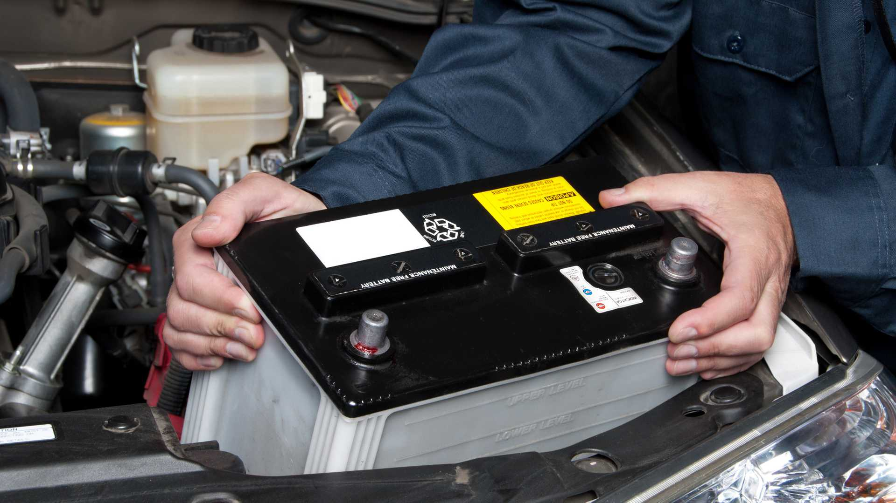

¿Cómo saber si la batería de mi auto está fallando?
A continuación, aprenderás cómo saber si la batería del auto está buena por medio de 5 síntomas que, al advertirse a tiempo, pueden alertarte y prevenir desperfectos mecánicos:
1. Luz de advertencia en el tablero de instrumentos
Los automóviles tienen el tablero de instrumentos por una razón: es una forma de avisarte de potenciales problemas para que los arregles a tiempo. Si te preguntas cómo saber si la batería de mi auto está fallando, entonces revisa constantemente que no esté encendida la imagen de una batería en tu tablero.
2. Arranque lento del motor
Si tu vehículo está tardando más de lo común en encender el motor entonces podría tratarse de problemas de la batería. El arranque debería ser rápido y poderoso, por lo que si sientes que es débil y lento revísala, cambiándola si es necesario.
3. Mal funcionamiento de los dispositivos electrónicos
Otro indicador de cómo saber si la batería del auto está buena es el apartado de componentes electrónicos que incorporan los vehículos. Una batería en perfectas condiciones debe ser capaz de entregar energía a la radio, cámara trasera, computador a bordo, luminaria interna y externa, además de la calefacción y el aire acondicionado. Si alguno de estos elementos no funciona o entrega un bajo rendimiento podría significar problemas con la batería.
4. Batería hinchada
Si el automóvil no enciende y no sabes por qué, entonces puedes abrir el capó y ver el aspecto físico de la batería. Cuando han sido expuestas a grandes cantidades de calor se hinchan produciendo la salida de las paredes exteriores. En ese momento deberás cambiar la batería ya que no volverá a funcionar. Lo mismo ocurre cuando dejas un vehículo sin usar durante un invierno helado, permitiendo que se congele la batería, momento en el cual será obligatorio cambiarla.
5. Olor a huevos podridos
Una batería que se ha congelado o sobrecargado liberará un gas cuyo olor es similar a huevos descompuestos. Si sientes este desagradable aroma debes cambiar de inmediato la batería ya que el ácido sulfúrico es corrosivo y puede afectar a otras partes del motor, dejando estropeado tu vehículo. Ten en cuenta que las baterías más comunes suelen durar un periodo de 3 a 5 años, por lo que, si la tuya lleva funcionando esa cantidad de tiempo y presenta alguno de los síntomas mencionados, puede ser el momento adecuado para su cambio. Mediante la puesta de atención a las señales mencionadas podrás anticiparte a eventos incómodos y mantener tu automóvil en óptimas condiciones. No te olvides de hacer una revisión exhaustiva, cada cierto tiempo, de todas las funciones que dependen de la batería y así evitarás tener problemas.